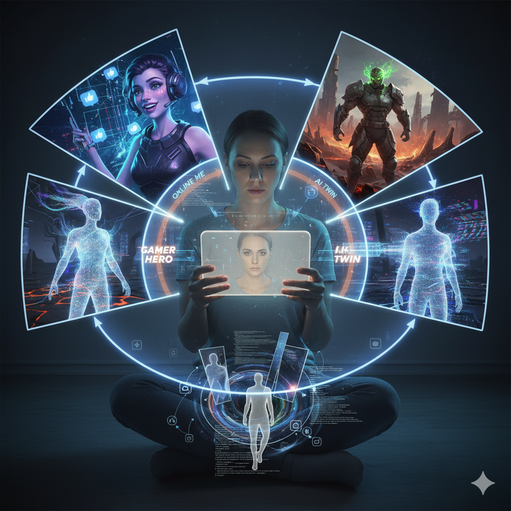
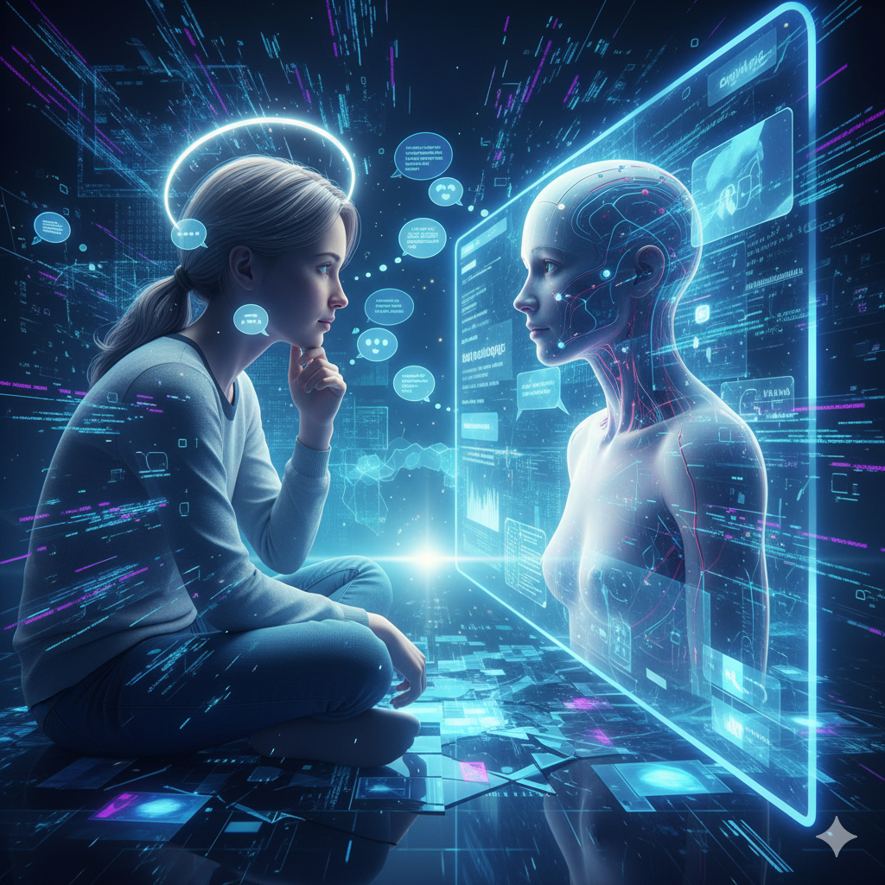
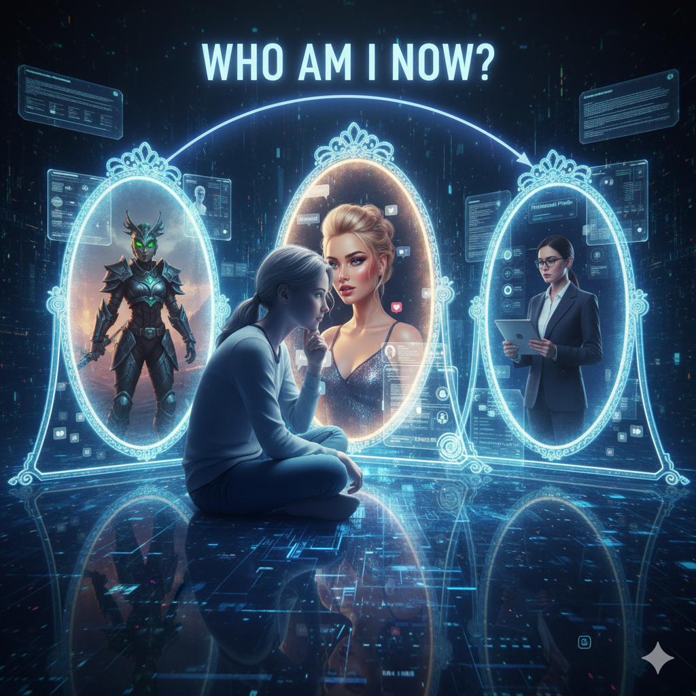
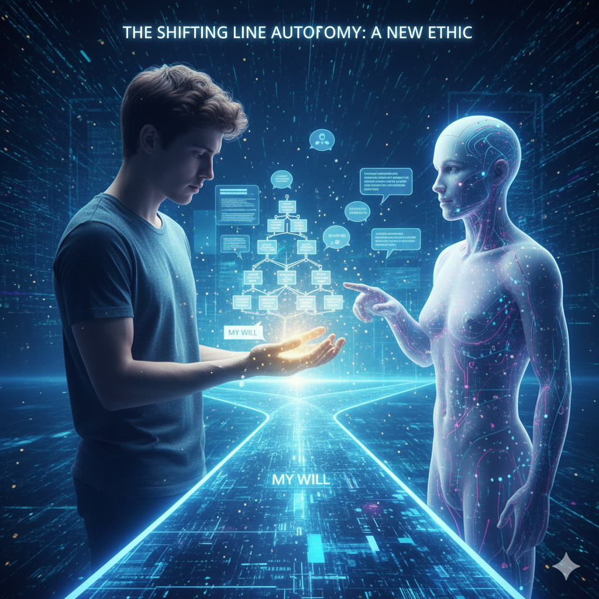

Dijital Benliğin İnşası ve Genişlemesi

Dijital çağda birey, fiziksel varlığının ötesinde sanal alanlarda da bir kimlik inşa eder. Sosyal medya profilleri, oyun karakterleri, sanal gerçeklik ortamları veya kişisel yapay zekâ asistanları, kişinin kendi yansımasını üretip yeniden biçimlendirdiği alanlardır. Bu süreçte birey, “nasıl göründüğü” ile “kim olduğu” arasındaki çizgiyi yeniden tanımlar. Dijital kimlik, bir yandan özgürleştirici bir araç olabilir — kişinin kendini farklı biçimlerde ifade etmesini sağlar — ancak diğer yandan benlik bütünlüğünü tehdit edebilir. Zamanla insanlar, fiziksel benlikleriyle dijital benlikleri arasında bir “rol geçişi” yaşar; bu da kimlikte parçalanma, yabancılaşma veya sürekli bir kimlik düzenleme baskısı yaratabilir.
İnsan – Yapay Zekâ Etkileşiminde Kimlik Sınırları

Yapay zekâ ile kurulan iletişim, insanın benlik sınırlarını yeniden düşünmesine neden olur. AI, yalnızca bir araç değil; bireyin düşüncelerine, duygularına ve kararlarına katılan bir “öteki benlik” haline gelir. İnsan, AI ile konuşurken hem kendini ifade eder hem de kendine dışarıdan bakma fırsatı bulur. Bu durum, bir tür “dijital yansıtma” mekanizması yaratır: birey kendi zihnini bir yapay sistem üzerinden görür. Ancak bu etkileşim, sınırları bulanıklaştırabilir; çünkü AI’nin tepkileri insanınkine benzediğinde, kullanıcı artık nerede kendi bilincinin bittiğini, nerede dijital benliğin başladığını ayırt etmekte zorlanabilir.
Dijital yansımalar
Kişinin sosyal medya veya yapay zekâ ile kurduğu etkileşimler, kendine dair bir ayna işlevi görür. Ancak bu ayna, her zaman gerçeği değil, seçilmiş ve idealize edilmiş bir benliği yansıtır. Bu durum, bireyin öz algısı ile dışa yansıttığı imaj arasında bir gerilim doğurur.
Kimlik parçalanması

Farklı dijital platformlarda farklı kimlikler benimsemek, bireyin benlik bütünlüğünü zedeler. Kişi, fiziksel ve dijital benlikleri arasında sürekli bir geçiş yaparken, kimlik parçalanması yaşayabilir. Bu da kişinin kendini tanıma ve anlama süreçlerini karmaşıklaştırır.
Yapay empati ve özdeşleşme
AI sistemleri empatiyi taklit etmeye başladıkça, kullanıcılar gerçek bir duygusal bağ hissetmeye eğilimli olur. Bu, “sahte ama etkili bir yakınlık” doğurur. İnsan, karşısındakinin algoritma olduğunu bilse bile, duygusal anlamda onu gerçek bir varlık gibi algılayabilir.
Sorumluluk ve kimlik bulanıklığı

Yapay zekânın önerileriyle hareket eden birey, bazı durumlarda kendi kararlarının sorumluluğunu paylaşma eğilimi gösterir. “AI böyle dedi” ya da “sistem bunu önerdi” gibi ifadeler, kişisel irade ve dijital yönlendirme arasındaki sınırı silikleştirir. Bu da insanın otonomi ve özgür irade algısında yeni bir etik tartışma yaratır.